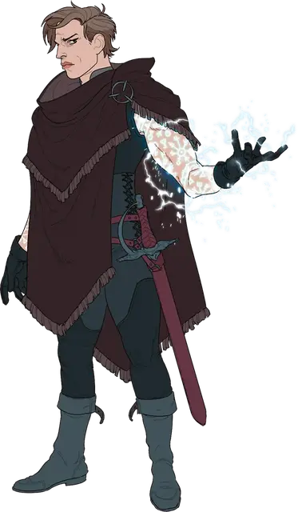

Агент-Волстракер
Volstrucker Agent

Волстракеры — тайная организация мистических убийц и силовиков на службе Ассамблеи Цербера. Их оперативники не имеют официального титула, но жители крупных двендальских городов, таких как Задаш и Рексентрум, вполголоса называют их «мордоворотами».
Вы агент-Волстракер. Ваш долг — заставить замолчать диссидентов, которые хотят подорвать волю короля Двендала и, что более важно, волю Ассамблеи.
Владение навыками: Обман, Скрытность.
Владение инструментами: Инструменты отравителя.
Языки: Один на ваш выбор
Снаряжение: Комплект обычной одежды, чёрный плащ с капюшоном, инструменты отравителя и кошель с 10 зм.
Трагедия
Счастливые люди не присоединяются к Волстракерам. Ассамблея Цербера охотится на талантливых людей, сломленных трагедией — в некоторых случаях трагедией, устроенной Волстракерами. Слегка сломанный разум легче переформировать и перевоспитать. Выберите трагедию, которая поставила вас на этот путь или совершите бросок по таблице Трагедии.
| к6 | Трагедия |
| 1 | Убийство семьи. Путём обмана или манипуляций Волстракеры убедили вас убить собственную семью. |
| 2 | Амнезия. Вы были вынуждены изучать магию настолько мощную, что она напрягала ваш разум до пределов смертных, крадя воспоминания о вашем прошлом. |
| 3 | Похищение. Вы были схвачены и подвергнуты пыткам агентами династии Крин и вам едва удалось спастись. |
| 4 | Голод. Страшный упадок поразил вашу деревню и многие из ваших друзей и членов семьи умерли от голода. Вы едва выжили. |
| 5 | Обезображивание. Один из ваших тайных экспериментов пошёл не так, как надо, и ранили или искалечили вас так серьёзно, что другие теперь избегают вас. Только Волстракеры проявили к вам доброту после того дня. |
| 6 | Изменчивость. Когда-то вы были отпрыском богатой семьи, потерявшей всё своё состояние в мгновение ока. |
УМЕНИЕ: Теневая сеть
У вас есть доступ к теневой сети Волстракеров, которая позволяет вам общаться с другими членами ордена на больших расстояниях. Если вы напишете письмо особыми тайными чернилами, направите его члену Волстракеров и бросите его в огонь, письмо сгорит дотла и снова материализуется целым на агенте, которому вы его адресовали.
Чернила, используемые для отправки письма по теневой сети, такие же, как и чернила, используемые волшебником для записывания заклинаний в книге заклинаний. Написание письма этими чернилами стоит 10 зм за страницу.
Персонализация
Агенты Волстракера обучены беспрекословно выполнять приказы и убивать без пощады. Травма, которая приводит человека в орден, может ещё сильнее гноиться на фоне мрака заданий агента Волстракеров. Официально никто никогда не покидает орден, но те, кто достаточно отчаялся, делают всё возможное, чтобы обрести хоть какую-то свободу.
| к6 | Черта характера |
| 1 | Я предпочитаю держать свои мысли при себе. |
| 2 | Я предаюсь пороку в избытке, чтобы успокоить свою совесть. |
| 3 | Я оставил эмоции позади себя. Теперь я совершенно спокоен. |
| 4 | Какое-то событие из прошлого всё время лезет в мой разум, вызывая у меня беспокойство. |
| 5 | Я всегда держу своё слово, кроме тех случаев, когда мне приказано его нарушить. |
| 6 | Я смеюсь над оскорблениями и никогда не принимаю их на свой счет. |
| к6 | Идеал |
| 1 | Порядок. Воля короны абсолютна. (Законный) |
| 2 | Истинная верность. Ассамблея Цербера выше любой силы, даже короны. (Законный) |
| 3 | Смерть. Наказание за неверность — смерть. (Злой) |
| 4 | Определение. Я не могу потерпеть неудачу. Никогда. (Нейтральный) |
| 5 | Страх. Люди не должны уважать власть. Они должны бояться её. (Злой) |
| 6 | Побег. Волстракеры - чистое зло! Я не могу искупить то, что я сделал для них, но я могу спасти свою жизнь. (Любой) |
| к4 | Привязанность |
| 1 | Работа — это всё, что имеет значение. Я увижу это. |
| 2 | Мои приказы важны, но мои товарищи дороже всего на свете. Я бы умер за них. |
| 3 | Всё, что я сделал, я сделал, чтобы защитить близкого мне человека. |
| 4 | Если империя падёт, вместе с ней падёт и вся цивилизация. Я буду сдерживать хаос и варварство любой ценой. |
| к4 | Слабость |
| 1 | Я пью, чтобы притупить боль в затылке. |
| 2 | Я немного схожу с ума, когда вижу кровь. |
| 3 | Я слышу голоса всех, кого убил. Я вижу их лица. Я не могу освободиться от этих призраков. |
| 4 | Страх — мощный мотиватор. Я сделаю всё возможное, чтобы те, кто знает, кто я такой, не увидели моего провала, а те, кто мне небезразличен, не узнали, кто я такой. |